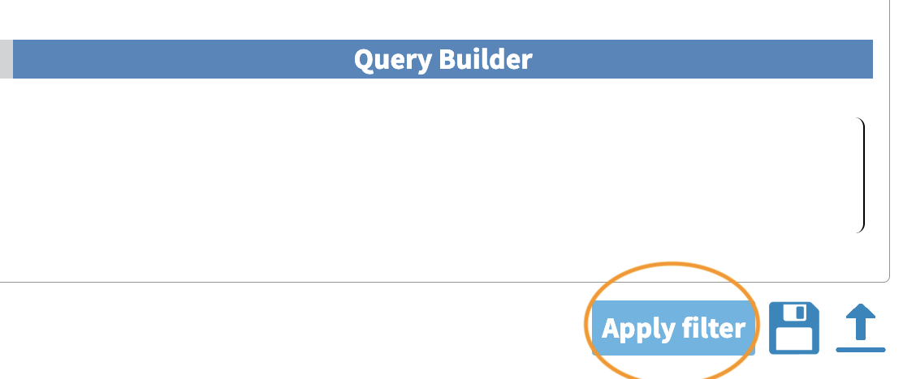
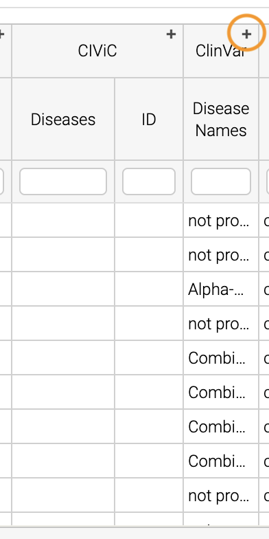

flowchart TD
L[Prepare for Installing] --> A
click L "#preparing-and-installing-open-cravat"
A[Installation] --> G[Install Annotators]
click A "#installing-opencravat"
click G "#installing-annotators"
G --> B[Convert to Input File Format]
click B "#understanding-the-input-file-format"
B -->|Variant File Input| C[Map Variants and Annotate]
click C "#annotating-our-example"
C -->|Results|D[Start Results Viewer]
click D "#starting-the-results-viewer"
D -->|Results| E[Filter Results]
click E "#examining-our-results-file-and-filtering"
E -->|Results| F[Visualizing Filtered Results]
click F "#visualizing-our-filtered-results"
Getting Started with OpenCRAVAT on the Command Line
Learning Objectives
Working through this document, you will learn to:
- Prepare your system for installing OpenCRAVAT
- Install the OpenCRAVAT software locally using
pip - Search for and Install available annotators
- Explain compatible variant formats
- Annotate variant files using the CLI tools
- Visualize and Summarize Results in OpenCRAVAT
The Basic OpenCRAVAT Workflow
In the diagram below, we’ll see the basic OpenCRAVAT workflow on the command-line. Click the boxes below in the diagram to jump to that particular section.
Preparing and Installing Open Cravat
Make sure you know where your Python is installed using the which command. In my example, I have python 3.11 installed via Homebrew, which is the python I want to use. In my case, since I’m on MacOS, I know that I run python programs using python3 rather than python.
which python3tedladeras@teds-MacBook-Pro ~ % which python3
/opt/homebrew/bin/python3Also, check whether you have pip or pip3 installed, and whether it has a similar location to your python3.
which pip3tedladeras@teds-MacBook-Pro ~ % which pip3
/opt/homebrew/bin/pip3Using a Virtual Environment
You should create a virtual environment so that your OpenCRAVAT installation is isolated from other installations. We’ll use venv, which installed in the default Python distribution.
We’ll make a separate virtual environment using the venv command. Here we’re creating a virtual environment called oc:
python3 -m venv ocThis creates a folder called oc in our current directory. This is where all of our separate Python packages will live. Then we’ll activate the virtual environment using source:
source oc/bin/activateYou can double check whether the environment is activated by using which python3 again. It should poiint to the bin folder within your virtual environment folder.. Note that our prompt also has an (oc) in front.
which python3(oc) tedladeras@teds-MacBook-Pro ~ % which python3
/Users/tedladeras/oc/bin/python3Installing OpenCRAVAT
Now we can install Open Cravat using pip/pip3.
pip3 install open-cravattedladeras@teds-MacBook-Pro local % pip3 install open-cravat
Collecting open-cravat
Downloading open-cravat-2.4.2.tar.gz (3.1 MB)
━━━━━━━━━━━━━━━━━━━━━━━━━━━━━━━━━━━━━━━━ 3.1/3.1 MB 40.4 MB/s eta 0:00:00
Preparing metadata (setup.py) ... done
Collecting pyyaml (from open-cravat)
Downloading PyYAML-6.0.1-cp311-cp311-macosx_11_0_arm64.whl.metadata (2.1 kB)
Collecting requests (from open-cravat)
Downloading requests-2.31.0-py3-none-any.whl.metadata (4.6 kB)
Collecting requests-toolbelt (from open-cravat)
Downloading requests_toolbelt-1.0.0-py2.py3-none-any.whl (54 kB)Confirm that Open Cravat is installed:
oc --helptedladeras@teds-MacBook-Pro ~ % oc --help
usage: oc [-h] {run,report,gui,module,config,new,store,util,version,feedback} ...
Open-CRAVAT genomic variant interpreter. https://github.com/KarchinLab/open-cravat
options:
-h, --help show this help message and exit
Commands:
{run,report,gui,module,config,new,store,util,version,feedback}
run Run a job
report Generate a report from a job
gui Start the GUI
module Change installed modules
config View and change configuration settings
new Create new modules
store Publish modules to the store
util Utilities
version Show version
feedback Send feedback to the developersAll of our interactions with OpenCRAVAT will be prefaced by oc. For example, we can launch the OpenCRAVAT GUI as a webserver on our machine using
oc guiNow you’re ready to start installing annotators.
Installing via Bioconda
If you prefer to install via conda/mamba, here are directions for you. You will want to install mamba via miniforge: download the installation scripts here.
When mamba has been installed, you’ll need to create a conda environment and install open-cravat via a single command:
mamba create --name oc open-cravatThis will create an environment called oc
When you’re ready to use Open-Cravat, you can activate this oc environment:
mamba activate ocConfirm that you can see the oc executable with which. It should be where you installed miniforge:
which oc/Users/tedladeras/miniforge3/envs/oc/bin/ocNow you can use Open-Cravat as below and install annotators.
Installing annotators
The first thing we’ll need to install are some core bits of Open Cravat, called install-base. We’ll do this with the command oc module:
oc module install-basetedladeras@teds-MacBook-Pro local % oc module install-base
Installing: casecontrol:1.2.0, cravat-converter:1.1.2, excelreporter:2.1.1, go:2022.11.01, hg38:1.11.0, hg38wgs:1.0.0, oldcravat-converter:1.1.2, tagsampler:1.1.6, textreporter:2.1.0, varmeta:1.0.0, vcf-converter:2.2.1, vcfinfo:2.0.0, wgbase:1.1.3, wgcasecontrols:1.0.1, wgcasecontrolsummary:1.0.1, wgcircossummary:2.2.0, wgcodingvsnoncodingsummary:2.0.0, wggo:1.2.0, wggosummary:2.4.0, wghg19:1.0.3, wglollipop:2.2.1, wgncrna:1.1.0, wgndex:1.1.0, wgnote:3.0.0, wgrankscore:1.1.0, wgsosamplesummary:2.2.0, wgsosummary:1.5.0, wgvcfinfo:1.0.3
[2024:01:31 14:17:48] Starting to install casecontrol:1.2.0...
[2024:01:31 14:17:48] Downloading code archive of casecontrol:1.2.0...
[**************************************************] 21.4 kB / 21.4 kB (100%)
[2024:01:31 14:17:49] Extracting code archive of casecontrol:1.2.0...
[2024:01:31 14:17:49] Verifying code integrity of casecontrol:1.2.0...
[2024:01:31 14:17:49] Finished installation of casecontrol:1.2.0
[2024:01:31 14:17:49] Starting to install cravat-converter:1.1.2...
[2024:01:31 14:17:49] Downloading code archive of cravat-converter:1.1.2...
....[intermediate output skipped]
[**************************************************] 670 B / 670 B (100%)
[2024:01:31 14:19:57] Extracting code archive of wgvcfinfo:1.0.3...
[2024:01:31 14:19:57] Verifying code integrity of wgvcfinfo:1.0.3...
[2024:01:31 14:19:57] Finished installation of wgvcfinfo:1.0.3Let’s list the available annotators. This is a very large list of annotators. This is just the first few entries.
tedladeras@teds-MacBook-Pro local % oc module ls -a -t annotatorName Title Type Installed Store ver Store data ver Local ver Local data ver Size
abraom ABRaOM annotator 1.0.0 113.6 MB
alfa ALFA: Allele Frequency Aggregator annotator 1.0.0 2020.02.29 19.8 GB
alfa_african ALFA: Allele Frequency Aggregator African annotator 1.0.0 2020.02.29 23.2 GB
alfa_asian ALFA: Allele Frequency Aggregator Asian annotator 1.0.0 2020.02.29 24.1 GB
alfa_european ALFA: Allele Frequency Aggregator European annotator 1.0.0 2020.02.29 19.8 GB
alfa_latin_american ALFA: Allele Frequency Aggregator Latin American annotator 1.0.0 2020.02.29 20.3 GB
alfa_other ALFA: Allele Frequency Aggregator Others
....We’re actually looking for ClinVar, which is a list of clinically relevant annotations. Note that all of the annotators are in lower snake case (such as alfa_asian). So we can add clinvar in with our query.
oc module ls -a clinvar -t annotator tedladeras@teds-MacBook-Pro local % oc module ls -a clinvar -t annotator
Name Title Type Installed Store ver Store data ver Local ver Local data ver Size
clinvar ClinVar annotator 2023.02.01 2023.02.01.1 381.8 MB Ok, now we know our annotator exists, and we can install it with the oc module install command:
oc module install clinvarWe’ll need to confirm y to proceed:
tedladeras@teds-MacBook-Pro local % oc module install clinvar
Installing: clinvar:2023.02.01, wgclinvar:1.1.1
Proceed? ([y]/n) > yThen the installation will proceed:
[2024:01:31 14:25:08] Starting to install clinvar:2023.02.01...
[2024:01:31 14:25:08] Downloading code archive of clinvar:2023.02.01...
[**************************************************] 290.9 kB / 290.9 kB (100%)
[2024:01:31 14:25:09] Extracting code archive of clinvar:2023.02.01...
[2024:01:31 14:25:09] Verifying code integrity of clinvar:2023.02.01...
[2024:01:31 14:25:09] Downloading data of clinvar:2023.02.01...
[**************************************************] 49.0 MB / 49.0 MB (100%)
[2024:01:31 14:25:15] Extracting data of clinvar:2023.02.01...
[2024:01:31 14:25:15] Verifying data integrity of clinvar:2023.02.01...
[2024:01:31 14:25:16] Finished installation of clinvar:2023.02.01
[2024:01:31 14:25:16] Starting to install wgclinvar:1.1.1...
[2024:01:31 14:25:16] Downloading code archive of wgclinvar:1.1.1...
[**************************************************] 36.8 kB / 36.8 kB (100%)
[2024:01:31 14:25:17] Extracting code archive of wgclinvar:1.1.1...
[2024:01:31 14:25:17] Verifying code integrity of wgclinvar:1.1.1...
[2024:01:31 14:25:17] Finished installation of wgclinvar:1.1.1Understanding the Input File Format
[Video Here]
We can generate an example file using oc new example-input. Note the period at the end, which means that we will generate the file in the current directory:
oc new example-input .Let’s confirm that we created this example:
ls -l example*tedladeras@teds-MacBook-Pro ~ % ls -l example*
-rw-r--r-- 1 tedladeras staff 9036 Jan 31 14:27 example_inputNote the created file has an underscore (_) rather than a dash (-). Let’s take a look at the example_input file that we created:
cat example_input | headchr1 69091 + A C s0
chr1 69091 + ATG C s0
chr6 31039077 + C G s0
chr1 27612918 + G a s1
chr1 27612918 + G A s0
chrM 235 + A G clinvar
chrM 3308 + T C omim
chr8 54626835 + A T s0
chr4 1804372 + A G s1
chr4 1804372 + AT GC s1
chr4 1804372 + A T s1Annotating our example
Now we have our example, we can run Open Cravat. This will annotate our example_input file with all available annotators.
oc run ./example_input -l hg38tedladeras@teds-MacBook-Pro ~ % oc run ./example_input -l hg38
Input file(s): /Users/tedladeras/example_input
Genome assembly: hg38
Running converter...
Converter (converter) finished in 0.124s
Running gene mapper... finished in 2.668s
Running annotators...
annotator(s) finished in 1.466s
Running aggregator...
Variants finished in 0.010s
Genes finished in 0.003s
Samples finished in 0.022s
Tags finished in 0.025s
Indexing
variant base__coding finished in 0.000s
variant base__chrom finished in 0.000s
variant base__so finished in 0.000s
Running postaggregators...
Tag Sampler (tagsampler) finished in 0.008s
Finished normally. Runtime: 4.539sStarting the Results Viewer
We saw that one of the files generated was an .sqlite file. These are our results, which we can visualize using oc gui, which will launch the a web server so we can examine our results using the GUI:
oc gui example_input.sqlitetedladeras@teds-MacBook-Pro ~ % oc gui example_input.sqlite
____ __________ ___ _ _____ ______
/ __ \____ ___ ____ / ____/ __ \/ | | / / |/_ __/
/ / / / __ \/ _ \/ __ \/ / / /_/ / /| | | / / /| | / /
/ /_/ / /_/ / __/ / / / /___/ _, _/ ___ | |/ / ___ |/ /
\____/ .___/\___/_/ /_/\____/_/ |_/_/ |_|___/_/ |_/_/
/_/
OpenCRAVAT is served at localhost:8080
(To quit: Press Ctrl-C or Ctrl-Break if run on a Terminal or Windows, or click "Cancel" and then "Quit" if run through OpenCRAVAT app on Mac OS)
(Getting result of [example_input.sqlite]:[variant]...)
Done getting result of [example_input.sqlite][variant] in 0.029s
(Getting result of [example_input.sqlite]:[gene]...)
Done getting result of [example_input.sqlite][gene] in 0.021sA window should open in your web browser. If not, enter https://localhost:8080 to view the file.

Examining our Results File and Filtering
Now we take a look at our results in the web interface. Under the list of jobs, we can see our job. Let’s select Open Result Viewer under the Status tab:

Keep in mind that the web interface is limited to visualizing 100,000 variants, so if you have a larger result file, you’ll need to filter the results down. So let’s take a look at how to filter our variants down.
We can filter variants by selecting the Filter tab in the Results viewer:
Under “Variant Properties” we can limit our list of variants to those that have ClinVar annotations. Let’s build a filter using the Query Builder, which will allow us to impose multiple criteria as a filter.

We’ll add a rule (a logical condition) to our filter using the + button:

Now we’ll add a rule and select those that have ClinVar annotations. To do this, we’ll first select a) ClinVar on the left, the b) Clinical Significance column, and c) has data:
 Now we can apply this rule we’ve built by clicking on the Apply Filter button on the bottom right of the Query Builder:
Now we can apply this rule we’ve built by clicking on the Apply Filter button on the bottom right of the Query Builder:
 How many variants are left after the filtering?
Calculating the Effect of Filters
If you have multiple filters, you can actually precalculate the numbers of variants after filtering by using the icon below.

This can be helpful to check if your filters are too strict (that is, they won’t return anything).
Just note that the filter is not actually applied to the data until you hit the Apply Filter Button.
Visualizing Our Filtered Results
Now that we’ve filtered, let’s go back to the Summary Tab:
 In the Summary tab, we can see information about the annotated variants, such as from the sequence ontology. We can get the counts within a sequence ontology category by mousing over that category in our plot:
In the Summary tab, we can see information about the annotated variants, such as from the sequence ontology. We can get the counts within a sequence ontology category by mousing over that category in our plot:
 These visualizations can be moved around and pinned. Using the camera icon, you can also save these visualizations.
These visualizations can be moved around and pinned. Using the camera icon, you can also save these visualizations.
Let’s move over to the Variant tab and look for pathogenic variants. First, we’ll click over to the Variant tab:
 Scrolling to the right, we can see there is a column for the ClinVar annotations. Notice the + on the top right. We’ll click that to expand the ClinVar annotations:
Scrolling to the right, we can see there is a column for the ClinVar annotations. Notice the + on the top right. We’ll click that to expand the ClinVar annotations:
 In the Clinical Significance column, we can see that we can filter. Let’s select those variants that have pathogenic significance. Clicking into the search box underneath this column, we can select pathogenic:
How many variants are pathogenic?
The last thing we might want to do is to export our results. We can use the export button at the bottom of the table:

When you click that, you will have the option to export the variant level results as a tab seperated value (TSV) file. Note that this result table will have filters applied to it as well.
Multiple Rules
Note that we could have limited our search to pathogenic variants by adding another filter rule like we did above in the filtering step. We’re showing this way in case you didn’t know the available categories within the Clinical Significance column.
Deactivating Your Environment
When you’re done using Open-Cravat and it’s installed by an environment, make sure to deactivate:
For the python/venv installation:
deactivateFor the mamba/conda installation:
mamba deactivateWhat You Learned
We learned the following in this section:
- Prepare your system for installing OpenCRAVAT
- Install the OpenCRAVAT software locally using
pip - Search for and Install available annotators
- Explain compatible variant formats
- Annotate variant files using the CLI tools
- Visualize and Summarize Results in OpenCRAVAT